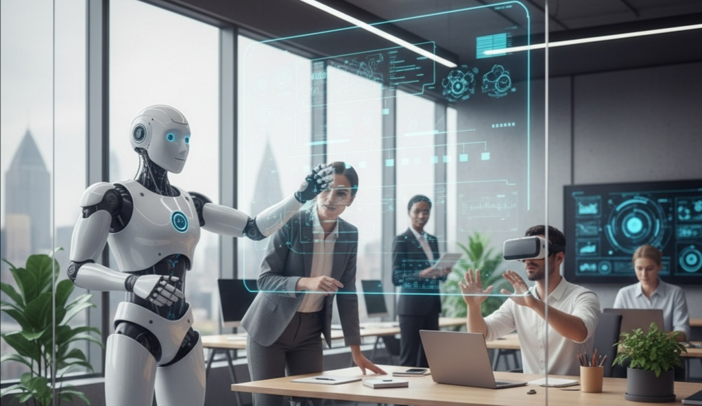
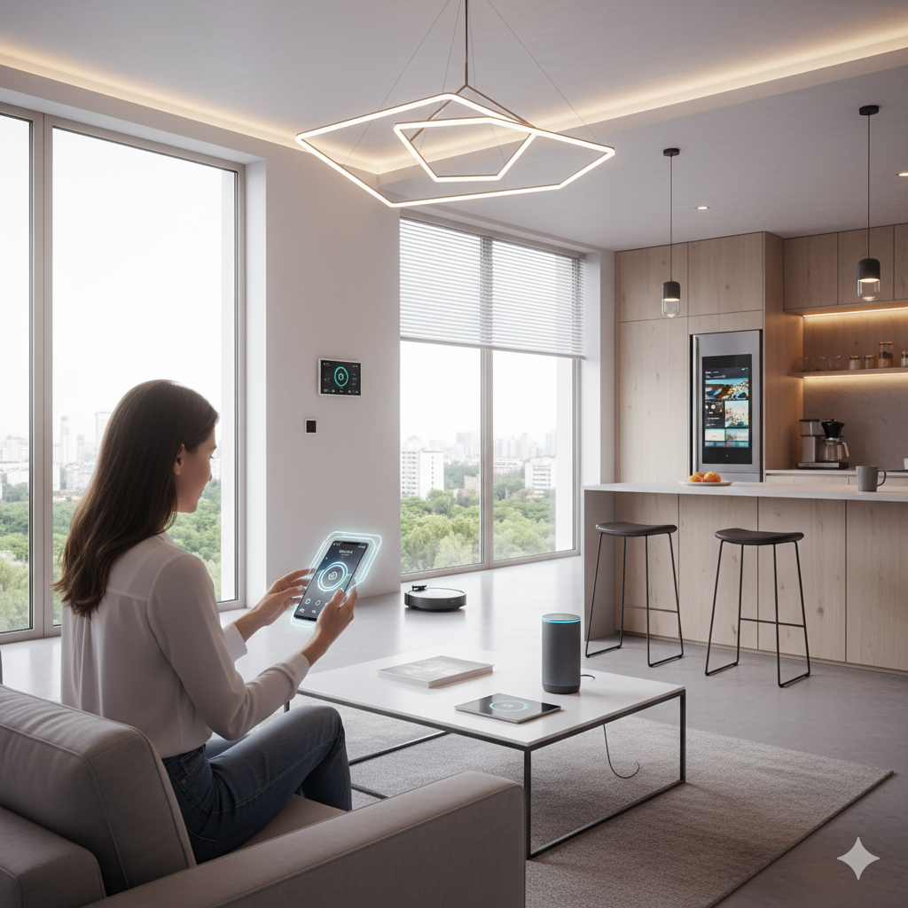
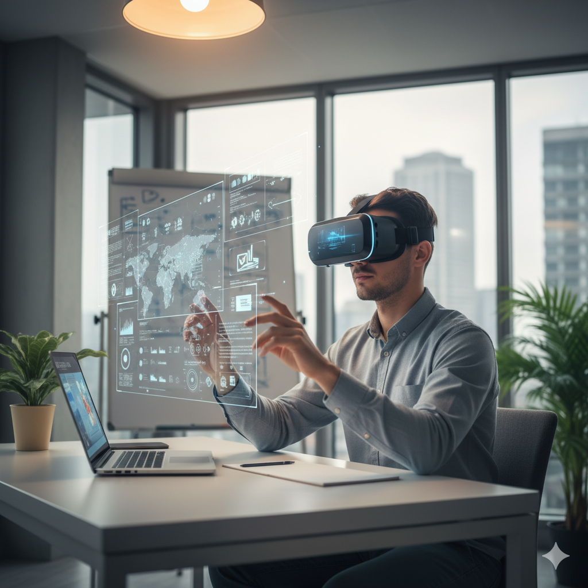
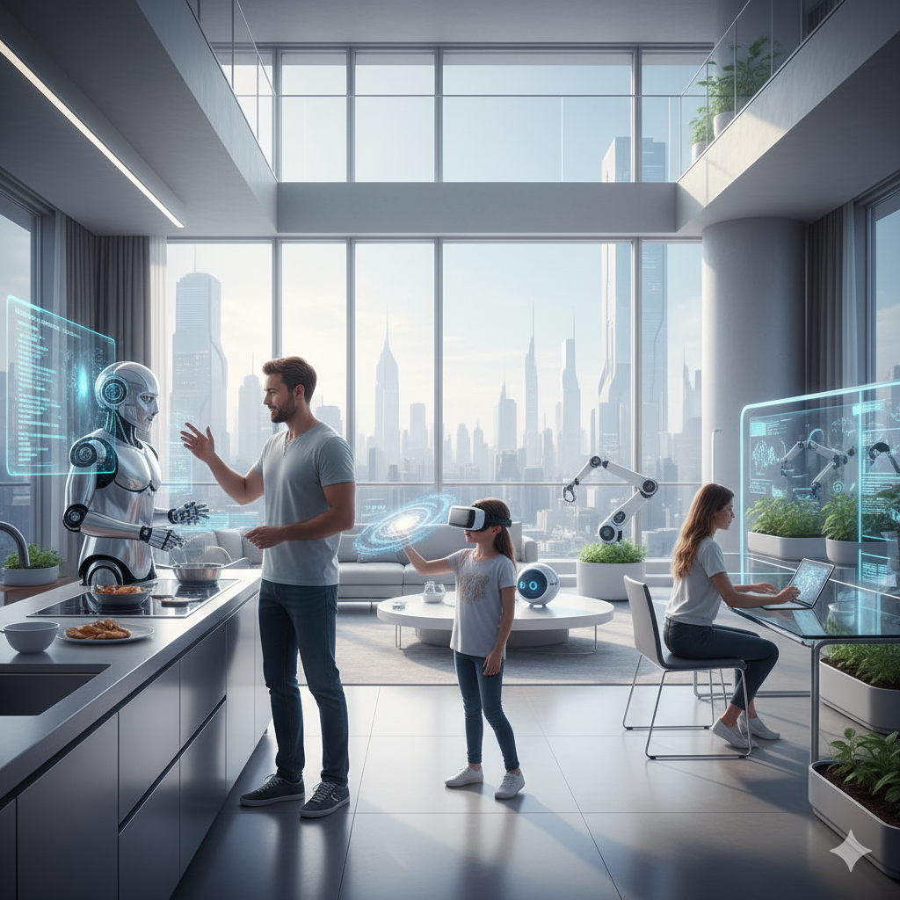

أبرز مجالات التكنولوجيا الحديثة
1. الذكاء الاصطناعي (AI)

الذكاء الاصطناعي أصبح جزءًا لا يتجزأ من حياتنا اليومية. يُستخدم الآن في مجالات متعددة، مثل تحليل البيانات الضخمة،
التنبؤ بسلوك المستخدمين، تحسين الخدمات الصحية، وحتى في السيارات ذاتية القيادة.
الشركات الكبرى تستثمر مليارات الدولارات لتطوير أنظمة ذكية تتعلم تلقائيًا وتحسن أداءها دون تدخل بشري مباشر.
كما يُستخدم في صناعة المحتوى، التعرف على الصور والأصوات، ومساعدة البشر في اتخاذ القرارات المعقدة بسرعة وكفاءة.
هذا التطور يفتح أبوابًا جديدة للابتكار ولكنه أيضًا يطرح تحديات كبيرة في مجالات الخصوصية والأمان الرقمي.
2. المنازل الذكية وإنترنت الأشياء (IoT)

المنازل الذكية تمثل مستقبل السكن الحديث، حيث يمكن التحكم في كل شيء داخل المنزل عن بُعد باستخدام الهواتف الذكية أو
أجهزة التحكم الصوتي
الإضاءة، التكييف، الأبواب، الأجهزة الكهربائية، وحتى الثلاجات الذكية أصبحت متصلة بالإنترنت وتعمل بشكل تلقائي.
هذا لا يوفر الراحة فحسب، بل يساهم أيضًا في ترشيد استهلاك الطاقة وحماية البيئة.
علاوة على ذلك، يتيح الإنترنت رصد وتحليل بيانات المنزل لتحسين الأداء اليومي، وزيادة الأمان من خلال أنظمة مراقبة
ذكية وتنبيهات فورية
3. الواقع الافتراضي والواقع المعزز (VR/AR)

الواقع الافتراضي والواقع المعزز لم يعدا مقتصرين على الألعاب فقط، بل أصبحا أدوات تعليمية وعملية قوية.
في التعليم، يمكن للطلاب تجربة تجارب معملية أو بيئات تاريخية بشكل افتراضي، مما يعزز الفهم والاستيعاب.
في مجال الطب، يُستخدم الواقع الافتراضي لتدريب الجراحين على العمليات المعقدة دون المخاطرة بحياة المرضى، بينما يوفر
الواقع المعزز للمهندسين والمصممين أدوات للتفاعل مع النماذج ثلاثية الأبعاد بشكل واقعي.
كما تدخل هذه التقنيات في مجالات التسوق، الترفيه، وتدريب الموظفين، مما يجعل تجربة المستخدم أكثر تفاعلية وغنية
بالمعلومات.
4. التوقعات المستقبلية

في المستقبل، ستستمر التكنولوجيا في إحداث ثورة في جميع القطاعات. من المتوقع أن تصبح الأجهزة الذكية أكثر تكاملًا مع
حياتنا اليومية، بحيث يمكنها إدارة المهام المنزلية والعمل تلقائيًا، وتحليل البيانات لاتخاذ قرارات أسرع وأكثر دقة.
كما قد نشهد انتشارًا أوسع للذكاء الاصطناعي في مجالات التعليم والطب والصناعة، مما سيؤدي إلى تحسين جودة الخدمات
وتقليل الأخطاء البشرية.
بالإضافة إلى ذلك، ستبرز أهمية التعامل الأخلاقي مع التكنولوجيا، وحماية الخصوصية والأمان الرقمي، لضمان أن يكون
التقدم التقني في صالح المجتمع.
قد نرى أيضًا ابتكار حلول ذكية لمشكلات البيئة والطاقة من خلال الأجهزة المتصلة وتحليل البيانات الضخمة، ما يجعل
حياتنا أكثر راحة واستدامة.
الخلاصة: التكنولوجيا الحديثة ليست مجرد أدوات، بل أسلوب حياة جديد يعيد تعريف علاقتنا بالعالم من
حولنا.